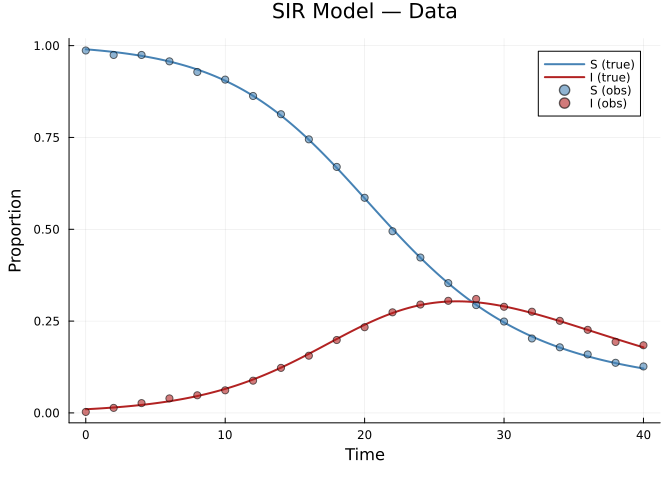
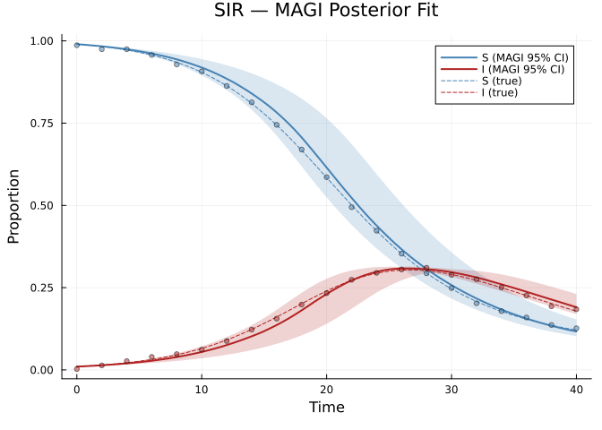
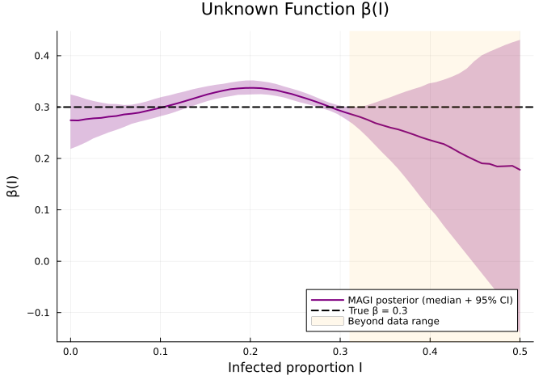
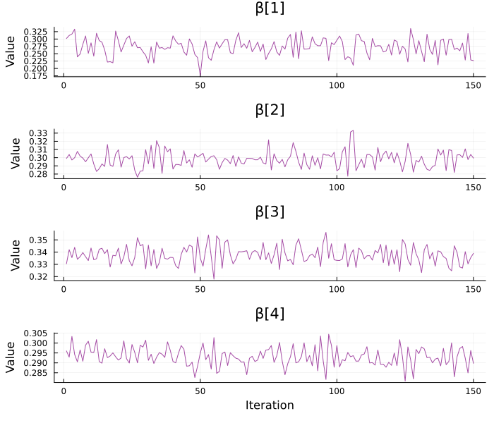
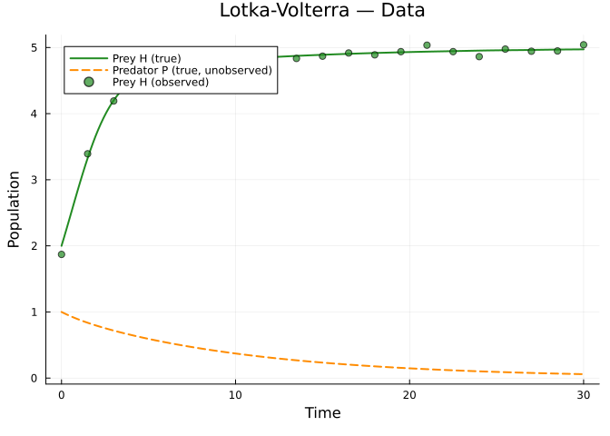
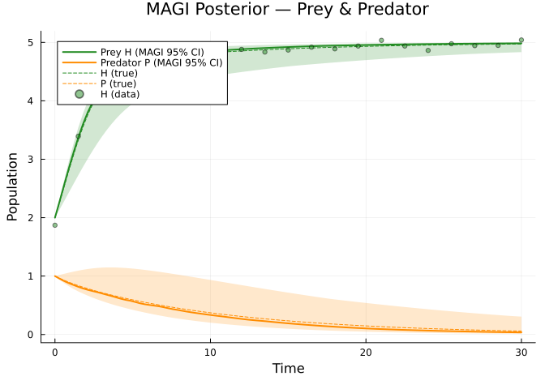
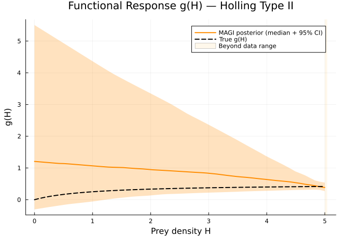
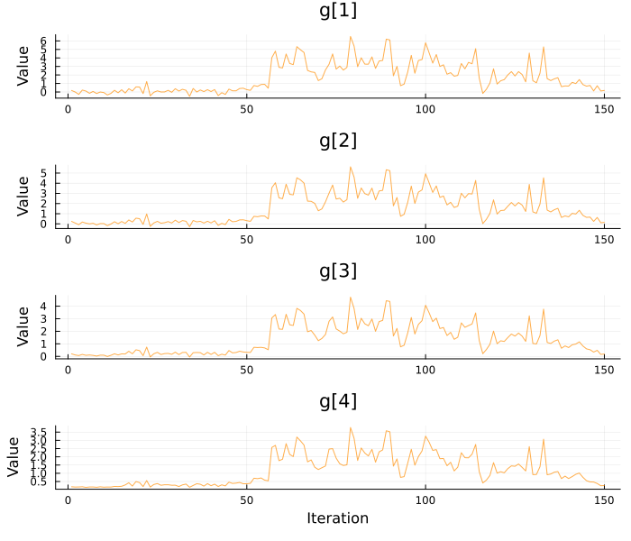
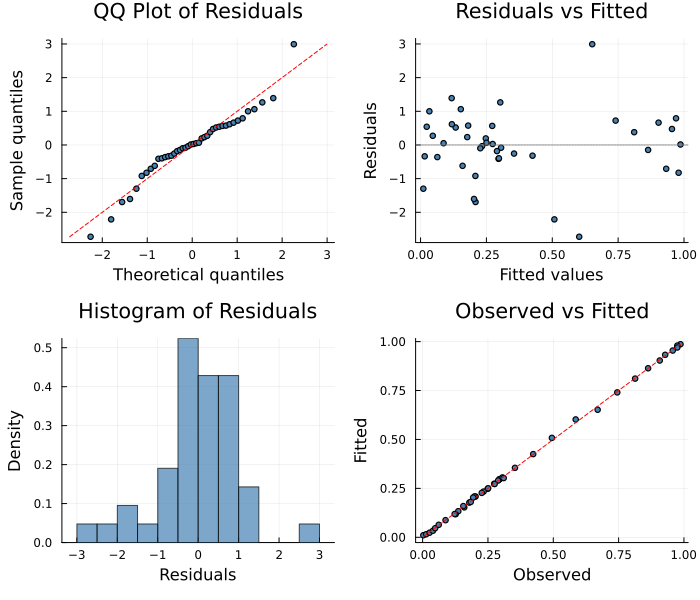

MAGI: Manifold-Constrained Gaussian Process Inference
Overview
MAGI (Manifold-constrained Gaussian process Inference) is a Bayesian method that uses Gaussian processes to infer ODE parameters without numerically solving the ODE during sampling. It places a Gaussian-process prior on each state component and constrains the GP-implied derivative to match the ODE vector field — the “manifold constraint” — via the conditional derivative covariance K* = ''K − 'K C⁻¹ ('K)ᵀ (Yang, Wong & Kou 2021).
Key advantages:
- States sampled jointly: the trajectory values on the discretization grid are sampled together with the unknown-function parameters under the manifold-constrained GP posterior.
- No ODE solver in the loop: Avoids numerical integration at each MCMC step — faster per iteration than
MCMCSolver. - Handles partially observed systems: Unobserved state components are naturally inferred through the ODE constraint.
This vignette demonstrates MagiSolver on two examples: a fully observed system and a partially observed one.
Reference: Yang, Wong & Kou (2021) “Inference of dynamic systems from noisy and sparse data via manifold-constrained Gaussian processes.” PNAS 118(15).
using PartiallySpecifiedModels
using OrdinaryDiffEq
using Plots
using Statistics
using MCMCChains
using Random
Random.seed!(123)TaskLocalRNG()Example 1: SIR Model (Fully Observed)
We fit an SIR model where the force of infection β(I) is unknown.
True model: β(I) = 0.3 (constant, mass-action).
function sir!(du, u, p, t)
S, I, R = u
β_val = p.β(I)
du[1] = -β_val * S * I # dS/dt
du[2] = β_val * S * I - 0.1 * I # dI/dt
du[3] = 0.1 * I # dR/dt
endsir! (generic function with 1 method)Generate Data
true_p = (; β = I -> 0.3)
sol_true = solve(ODEProblem(sir!, [0.99, 0.01, 0.0], (0.0, 40.0), true_p),
Tsit5(); saveat=2.0)
t_data = collect(sol_true.t)
noise = 0.005
data_SI = hcat([sol_true.u[i][1:2] .+ noise .* randn(2) for i in 1:length(sol_true.t)]...)'
data_SI = max.(data_SI, 0.001)
S_true = [sol_true.u[i][1] for i in 1:length(sol_true.t)]
I_true = [sol_true.u[i][2] for i in 1:length(sol_true.t)]21-element Vector{Float64}:
0.01
0.014798852083446432
0.021784934635223737
0.03182285803804493
0.04597475471170783
0.0653926228482985
0.09104385624411433
0.12321500350597701
0.16087652175445702
0.2012197591625484
⋮
0.2936503268795184
0.3032531966247466
0.30134497913275166
0.2900296382132258
0.2720298642908939
0.2500001778874217
0.22607674059778446
0.2018689765405344
0.17847135397622202Plot the Data
t_fine = range(0.0, 40.0, length=200)
sol_fine = solve(ODEProblem(sir!, [0.99, 0.01, 0.0], (0.0, 40.0), true_p),
Tsit5(); saveat=collect(t_fine))
S_fine = [sol_fine.u[i][1] for i in 1:length(sol_fine.u)]
I_fine = [sol_fine.u[i][2] for i in 1:length(sol_fine.u)]
p_sir_data = plot(t_fine, S_fine, label="S (true)", lw=2, color=:steelblue,
xlabel="Time", ylabel="Proportion", title="SIR Model — Data")
plot!(p_sir_data, t_fine, I_fine, label="I (true)", lw=2, color=:firebrick)
scatter!(p_sir_data, t_data, data_SI[:, 1], label="S (obs)", ms=4, color=:steelblue, alpha=0.6)
scatter!(p_sir_data, t_data, data_SI[:, 2], label="I (obs)", ms=4, color=:firebrick, alpha=0.6)
p_sir_data
Figure 1: SIR data: observed S and I (points) vs true trajectories (lines)
Set Up and Solve
uf_β = BSplineApproximator(:β, (0.0, 0.5), 6; initial=0.2)
prob_sir = PSMProblem(sir!, [0.99, 0.01, 0.0], (0.0, 40.0), [uf_β];
data_times=t_data,
data_values=Float64.(data_SI),
obs_to_state=[1, 2],
known_params=NamedTuple(),
likelihood=PartiallySpecifiedModels.Gaussian())
sol_sir = solve(prob_sir, MagiSolver(
n_samples=150, n_warmup=150,
n_gridpoints=40,
obs_var=noise^2, preoptimize=true, verbose=false))[ Info: Found initial step size 0.0003662109375
PSMSolution((β = [0.2725673644645188, 0.298267636742948, 0.33767223562347426, 0.2931309575371555, 0.23389694762555593, 0.17865961037369296]), 112.5745843075786, 0.0015013897386099862, 6.0, Float64[], [0.9866847759340766 0.010543900052408045; 0.9796282128561605 0.015750617373829028; … ; 0.13333034527701426 0.20298918818649966; 0.11811138676898479 0.18073401588600882], [0.9867713466394801 0.002683743105555393; 0.9746336282649084 0.013710526549528701; … ; 0.1364645152671229 0.19328337605363627; 0.12652759050099283 0.18421483813613673], [0.0, 2.0, 4.0, 6.0, 8.0, 10.0, 12.0, 14.0, 16.0, 18.0 … 22.0, 24.0, 26.0, 28.0, 30.0, 32.0, 34.0, 36.0, 38.0, 40.0], Dict{Symbol, Any}(:β => DataInterpolations.CubicSpline{Vector{Float64}, Vector{Float64}, Vector{Float64}, Vector{Float64}, Vector{Float64}, Vector{Float64}, Float64, FindFirstFunctions.SearchProperties{Float64}}([0.2725673644645188, 0.298267636742948, 0.33767223562347426, 0.2931309575371555, 0.23389694762555593, 0.17865961037369296], [0.0, 0.1, 0.2, 0.3, 0.4, 0.5], Float64[], DataInterpolations.CubicSplineParameterCache{Vector{Float64}}(Float64[], Float64[]), [0.0, 0.1, 0.1, 0.09999999999999998, 0.10000000000000003, 0.09999999999999998], [0.0, 5.637883763423692, -14.328939092436515, 1.3103464262153468, 0.2719142924066487, 0.0], DataInterpolations.ExtrapolationType.Linear, DataInterpolations.ExtrapolationType.Linear, FindFirstFunctions.Guesser{Vector{Float64}}([0.0, 0.1, 0.2, 0.3, 0.4, 0.5], Base.RefValue{Int64}(1), true), FindFirstFunctions.SearchProperties{Float64}(true, false, false, false, false, 0.0, 0.0), FindFirstFunctions.KIND_LINEAR_SCAN, false)), (method = :magi, chains = MCMC chain (150×6×1 Array{Float64, 3}), state_mean = [0.9866847759340766 0.010543900052408045 -0.7102883376785912; 0.9834426278958378 0.012897710193773778 -0.7059343786170902; … ; 0.12522644006339417 0.19178268491799305 -0.04353597701369357; 0.11811138676898479 0.18073401588600882 -0.02458991695625233], mean_logposterior = -112.5745843075786, converged = false, reason = :maxiters, iterations = 300))Posterior Trajectories
We reconstruct trajectory predictions by forward-solving the ODE for each posterior sample:
chains_sir = sol_sir.convergence.chains
sample_sir = Array(chains_sir)
n_samp_sir = size(sample_sir, 1)
np_sir = nparams(uf_β)
n_traj = min(n_samp_sir, 100)
t_pred_sir = collect(range(0.0, 40.0, length=100))
traj_S = zeros(n_traj, length(t_pred_sir))
traj_I = zeros(n_traj, length(t_pred_sir))
knots_sir = collect(range(0.0, 0.5, length=uf_β.nknots))
quiet = DEVerbosity(SciMLLogging.None()) # no solver warnings: failed draws are counted instead
for i in 1:n_traj
params_i = sample_sir[i, 1:np_sir]
ev = PartiallySpecifiedModels.build_bspline_evaluator(knots_sir, params_i)
pred = solve(ODEProblem(sir!, [0.99, 0.01, 0.0], (0.0, 40.0), (; β = ev)),
Tsit5(); saveat=t_pred_sir, abstol=1e-8, reltol=1e-8, verbose=quiet)
# a draw whose trajectory cannot be integrated is left out (NaN) and counted below;
# any other error is a bug and stops the render
if SciMLBase.successful_retcode(pred)
traj_S[i, :] = [pred.u[k][1] for k in 1:length(pred.u)]
traj_I[i, :] = [pred.u[k][2] for k in 1:length(pred.u)]
else
traj_S[i, :] .= NaN
traj_I[i, :] .= NaN
end
end
println("$(count(isnan, traj_S[:, 1])) of $(n_traj) posterior draws could not be integrated and are left out")0 of 100 posterior draws could not be integrated and are left outnanmed(x) = median(filter(!isnan, x))
nanq(x, q) = quantile(filter(!isnan, x), q)
S_med = [nanmed(traj_S[:, j]) for j in 1:length(t_pred_sir)]
S_lo = [nanq(traj_S[:, j], 0.025) for j in 1:length(t_pred_sir)]
S_hi = [nanq(traj_S[:, j], 0.975) for j in 1:length(t_pred_sir)]
I_med = [nanmed(traj_I[:, j]) for j in 1:length(t_pred_sir)]
I_lo = [nanq(traj_I[:, j], 0.025) for j in 1:length(t_pred_sir)]
I_hi = [nanq(traj_I[:, j], 0.975) for j in 1:length(t_pred_sir)]
p_sir_fit = plot(t_pred_sir, S_med, ribbon=(S_med .- S_lo, S_hi .- S_med),
fillalpha=0.2, color=:steelblue, lw=2, label="S (MAGI 95% CI)",
xlabel="Time", ylabel="Proportion", title="SIR — MAGI Posterior Fit")
plot!(p_sir_fit, t_pred_sir, I_med, ribbon=(I_med .- I_lo, I_hi .- I_med),
fillalpha=0.2, color=:firebrick, lw=2, label="I (MAGI 95% CI)")
plot!(p_sir_fit, t_fine, S_fine, color=:steelblue, lw=1, ls=:dash, label="S (true)")
plot!(p_sir_fit, t_fine, I_fine, color=:firebrick, lw=1, ls=:dash, label="I (true)")
scatter!(p_sir_fit, t_data, data_SI[:, 1], ms=3, color=:steelblue, alpha=0.5, label="")
scatter!(p_sir_fit, t_data, data_SI[:, 2], ms=3, color=:firebrick, alpha=0.5, label="")
p_sir_fit
Figure 2: SIR posterior predictive trajectories from MAGI
Unknown Function β(I)
I_range = range(0.0, 0.5, length=60)
β_samples = zeros(n_samp_sir, length(I_range))
for i in 1:n_samp_sir
params_i = sample_sir[i, 1:np_sir]
ev = PartiallySpecifiedModels.build_bspline_evaluator(knots_sir, params_i)
for (j, Iv) in enumerate(I_range)
β_samples[i, j] = ev(Iv)
end
end
β_med = [median(β_samples[:, j]) for j in 1:length(I_range)]
β_lo = [quantile(β_samples[:, j], 0.025) for j in 1:length(I_range)]
β_hi = [quantile(β_samples[:, j], 0.975) for j in 1:length(I_range)]60-element Vector{Float64}:
0.3245749222922434
0.320642063378897
0.3156937958930904
0.311817515539971
0.30880696891017967
0.3061220254729179
0.30595431654170757
0.30406561188106856
0.3045500048383153
0.30731443582150786
⋮
0.36526403855115647
0.3746788065497638
0.38932926787678057
0.40086838249500323
0.40780406198738817
0.41418381108285096
0.420498255012577
0.42596584594036857
0.43077131131151514I_data_max = maximum(data_SI[:, 2])
p_β = plot(collect(I_range), β_med, ribbon=(β_med .- β_lo, β_hi .- β_med),
fillalpha=0.25, color=:purple, lw=2, label="MAGI posterior (median + 95% CI)",
xlabel="Infected proportion I", ylabel="β(I)",
title="Unknown Function β(I)")
hline!(p_β, [0.3], color=:black, lw=2, ls=:dash, label="True β = 0.3")
vspan!(p_β, [I_data_max, 0.5], color=:orange, alpha=0.08, label="Beyond data range")
p_β
Figure 3: Posterior credible interval for β(I) — should be constant at 0.3
Trace Plots
pn_sir = names(chains_sir, :parameters)
n_show_sir = min(4, length(pn_sir))
p_tr_sir = plot(layout=(n_show_sir, 1), size=(700, 150 * n_show_sir))
for i in 1:n_show_sir
vals = Array(chains_sir[:, pn_sir[i], :])[:, 1]
plot!(p_tr_sir, vals, subplot=i, label="", color=:purple, alpha=0.7,
title=string(pn_sir[i]), xlabel= i == n_show_sir ? "Iteration" : "", ylabel="Value")
end
p_tr_sir
Figure 4: Trace plots for SIR β(I) spline coefficients
Example 2: Predator-Prey (Partially Observed Prey Only)
MAGI’s key strength is handling partially observed systems. Here we observe only the prey population in a Lotka-Volterra model and infer the predator functional response.
function lv!(du, u, p, t)
H, P = u
du[1] = H * (1.0 - H / 5.0) - p.g(H) * P # logistic prey + predation
du[2] = 0.5 * p.g(H) * P - 0.3 * P # predator response - mortality
endlv! (generic function with 1 method)True functional response: g(H) = 0.5 H / (1 + H) (Holling Type II, saturates at 0.5).
Generate Data (Prey Only)
g_true(H) = 0.5 * H / (1.0 + H)
true_p_lv = (; g = g_true)
sol_true_lv = solve(ODEProblem(lv!, [2.0, 1.0], (0.0, 30.0), true_p_lv),
Tsit5(); saveat=1.5)
t_lv = collect(sol_true_lv.t)
H_true = [sol_true_lv.u[i][1] for i in 1:length(sol_true_lv.t)]
P_true = [sol_true_lv.u[i][2] for i in 1:length(sol_true_lv.t)]
prey_data = H_true .+ 0.05 .* randn(length(H_true))
prey_data = max.(prey_data, 0.01)
prey_matrix = reshape(prey_data, :, 1)21×1 Matrix{Float64}:
1.8704759812320613
3.392603252751341
4.191426554920289
4.617582163495093
4.772456336278946
4.836202164663587
4.771290887116561
4.920471034537855
4.880041046507073
4.834511574749956
⋮
4.889448033063627
4.9375772976834975
5.035427569730906
4.937839746264299
4.862289706017904
4.976549305442561
4.943829782445786
4.948065253635994
5.04146753621536Plot the Data
t_lv_fine = range(0.0, 30.0, length=200)
sol_lv_fine = solve(ODEProblem(lv!, [2.0, 1.0], (0.0, 30.0), true_p_lv),
Tsit5(); saveat=collect(t_lv_fine))
H_fine = [sol_lv_fine.u[i][1] for i in 1:length(sol_lv_fine.u)]
P_fine = [sol_lv_fine.u[i][2] for i in 1:length(sol_lv_fine.u)]
p_lv_data = plot(t_lv_fine, H_fine, label="Prey H (true)", lw=2, color=:forestgreen,
xlabel="Time", ylabel="Population", title="Lotka-Volterra — Data")
plot!(p_lv_data, t_lv_fine, P_fine, label="Predator P (true, unobserved)", lw=2,
color=:darkorange, ls=:dash)
scatter!(p_lv_data, t_lv, prey_data, label="Prey H (observed)", ms=4,
color=:forestgreen, alpha=0.7)
p_lv_data
Figure 5: Lotka-Volterra data: only prey (H) is observed
Fit with MAGI (Observing Only Prey)
uf_g = BSplineApproximator(:g, (0.0, 5.0), 8; initial=0.2)
prob_lv = PSMProblem(lv!, [2.0, 1.0], (0.0, 30.0), [uf_g];
data_times=t_lv,
data_values=Float64.(prey_matrix),
obs_to_state=[1], # only prey observed!
known_params=NamedTuple(),
likelihood=PartiallySpecifiedModels.Gaussian())
sol_lv = solve(prob_lv, MagiSolver(
n_samples=150, n_warmup=150,
n_gridpoints=40,
obs_var=0.0025, preoptimize=true, verbose=false))[ Info: Found initial step size 0.00625
PSMSolution((g = [1.7129590880682444, 1.5384940035660235, 1.359012511842996, 1.180352319386026, 0.9977517206511007, 0.8075199720161504, 0.6051317265532498, 0.3952792399902134]), 57.31862856984498, 0.027489526869619245, 8.0, Float64[], [1.9093108203186162; 3.342010434878031; … ; 4.966881921613982; 4.989041632920878;;], [1.8704759812320613; 3.392603252751341; … ; 4.948065253635994; 5.04146753621536;;], [0.0, 1.5, 3.0, 4.5, 6.0, 7.5, 9.0, 10.5, 12.0, 13.5 … 16.5, 18.0, 19.5, 21.0, 22.5, 24.0, 25.5, 27.0, 28.5, 30.0], Dict{Symbol, Any}(:g => DataInterpolations.CubicSpline{Vector{Float64}, Vector{Float64}, Vector{Float64}, Vector{Float64}, Vector{Float64}, Vector{Float64}, Float64, FindFirstFunctions.SearchProperties{Float64}}([1.7129590880682444, 1.5384940035660235, 1.359012511842996, 1.180352319386026, 0.9977517206511007, 0.8075199720161504, 0.6051317265532498, 0.3952792399902134], [0.0, 0.7142857142857143, 1.4285714285714286, 2.142857142857143, 2.857142857142857, 3.5714285714285716, 4.285714285714286, 5.0], Float64[], DataInterpolations.CubicSplineParameterCache{Vector{Float64}}(Float64[], Float64[]), [0.0, 0.7142857142857143, 0.7142857142857143, 0.7142857142857142, 0.7142857142857144, 0.7142857142857144, 0.714285714285714, 0.7142857142857144], [0.0, -0.017095858328613957, 0.009390484397770665, -0.010807599893635996, -0.012499262651976662, -0.028937672322752798, -0.014710450753710273, 0.0], DataInterpolations.ExtrapolationType.Linear, DataInterpolations.ExtrapolationType.Linear, FindFirstFunctions.Guesser{Vector{Float64}}([0.0, 0.7142857142857143, 1.4285714285714286, 2.142857142857143, 2.857142857142857, 3.5714285714285716, 4.285714285714286, 5.0], Base.RefValue{Int64}(1), true), FindFirstFunctions.SearchProperties{Float64}(true, false, false, false, false, 0.0, 0.0), FindFirstFunctions.KIND_LINEAR_SCAN, false)), (method = :magi, chains = MCMC chain (150×8×1 Array{Float64, 3}), state_mean = [1.9093108203186162 0.5216684768428231; 2.6508465501860017 0.5088596125882734; … ; 4.975830100994982 0.051803711348283404; 4.989041632920878 0.04758351590011138], mean_logposterior = -57.31862856984498, converged = false, reason = :maxiters, iterations = 300))Posterior Trajectories
chains_lv = sol_lv.convergence.chains
sample_lv = Array(chains_lv)
n_samp_lv = size(sample_lv, 1)
np_lv = nparams(uf_g)
n_traj_lv = min(n_samp_lv, 100)
t_pred_lv = collect(range(0.0, 30.0, length=100))
traj_H = zeros(n_traj_lv, length(t_pred_lv))
traj_P = zeros(n_traj_lv, length(t_pred_lv))
knots_lv = collect(range(0.0, 5.0, length=uf_g.nknots))
for i in 1:n_traj_lv
params_i = sample_lv[i, 1:np_lv]
ev = PartiallySpecifiedModels.build_bspline_evaluator(knots_lv, params_i)
pred = solve(ODEProblem(lv!, [2.0, 1.0], (0.0, 30.0), (; g = ev)),
Tsit5(); saveat=t_pred_lv, abstol=1e-8, reltol=1e-8, verbose=quiet)
# a draw whose trajectory cannot be integrated is left out (NaN) and counted below;
# any other error is a bug and stops the render
if SciMLBase.successful_retcode(pred)
traj_H[i, :] = [pred.u[k][1] for k in 1:length(pred.u)]
traj_P[i, :] = [pred.u[k][2] for k in 1:length(pred.u)]
else
traj_H[i, :] .= NaN
traj_P[i, :] .= NaN
end
end
println("$(count(isnan, traj_H[:, 1])) of $(n_traj_lv) posterior draws could not be integrated and are left out")43 of 100 posterior draws could not be integrated and are left outH_med = [nanmed(traj_H[:, j]) for j in 1:length(t_pred_lv)]
H_lo = [nanq(traj_H[:, j], 0.025) for j in 1:length(t_pred_lv)]
H_hi = [nanq(traj_H[:, j], 0.975) for j in 1:length(t_pred_lv)]
P_med = [nanmed(traj_P[:, j]) for j in 1:length(t_pred_lv)]
P_lo = [nanq(traj_P[:, j], 0.025) for j in 1:length(t_pred_lv)]
P_hi = [nanq(traj_P[:, j], 0.975) for j in 1:length(t_pred_lv)]
p_lv_fit = plot(t_pred_lv, H_med, ribbon=(H_med .- H_lo, H_hi .- H_med),
fillalpha=0.2, color=:forestgreen, lw=2, label="Prey H (MAGI 95% CI)",
xlabel="Time", ylabel="Population", title="MAGI Posterior — Prey & Predator")
plot!(p_lv_fit, t_pred_lv, P_med, ribbon=(P_med .- P_lo, P_hi .- P_med),
fillalpha=0.2, color=:darkorange, lw=2, label="Predator P (MAGI 95% CI)")
plot!(p_lv_fit, t_lv_fine, H_fine, color=:forestgreen, lw=1, ls=:dash, label="H (true)")
plot!(p_lv_fit, t_lv_fine, P_fine, color=:darkorange, lw=1, ls=:dash, label="P (true)")
scatter!(p_lv_fit, t_lv, prey_data, ms=3, color=:forestgreen, alpha=0.5, label="H (data)")
p_lv_fit
Figure 6: Posterior trajectories: prey (green) and inferred predator (orange)
Posterior draws whose trajectories diverge (the prey goes negative and the solution blows up) are left out, as the count above the figure reports. The band therefore describes only the draws that can be integrated, and when many diverge it understates the posterior uncertainty.
Functional Response Recovery
H_range = range(0.0, 5.0, length=60)
g_samples = zeros(n_samp_lv, length(H_range))
for i in 1:n_samp_lv
params_i = sample_lv[i, 1:np_lv]
ev = PartiallySpecifiedModels.build_bspline_evaluator(knots_lv, params_i)
for (j, Hv) in enumerate(H_range)
g_samples[i, j] = ev(Hv)
end
end
g_med = [median(g_samples[:, j]) for j in 1:length(H_range)]
g_lo = [quantile(g_samples[:, j], 0.025) for j in 1:length(H_range)]
g_hi = [quantile(g_samples[:, j], 0.975) for j in 1:length(H_range)]
g_true_vals = [g_true(H) for H in H_range]60-element Vector{Float64}:
0.0
0.0390625
0.07246376811594203
0.10135135135135134
0.12658227848101267
0.1488095238095238
0.16853932584269662
0.18617021276595744
0.20202020202020202
0.21634615384615383
⋮
0.40605095541401276
0.40752351097178685
0.4089506172839506
0.4103343465045593
0.4116766467065868
0.41297935103244837
0.41424418604651164
0.4154727793696275
0.4166666666666667H_data_max = maximum(prey_data)
p_g = plot(collect(H_range), g_med, ribbon=(g_med .- g_lo, g_hi .- g_med),
fillalpha=0.25, color=:darkorange, lw=2, label="MAGI posterior (median + 95% CI)",
xlabel="Prey density H", ylabel="g(H)",
title="Functional Response g(H) — Holling Type II")
plot!(p_g, collect(H_range), g_true_vals, color=:black, lw=2, ls=:dash, label="True g(H)")
vspan!(p_g, [H_data_max, 5.0], color=:orange, alpha=0.08, label="Beyond data range")
p_g
Figure 7: Posterior credible interval for functional response g(H)
Posterior mean g(H) vs. true Holling Type II:
g(0.5) = 1.138 [-0.1617, 4.9251] (true: 0.1667)
g(1.0) = 1.0642 [-0.0522, 4.3443] (true: 0.25)
g(2.0) = 0.9427 [0.1398, 3.3169] (true: 0.3333)
g(3.0) = 0.84 [0.2201, 2.3947] (true: 0.375)
g(4.0) = 0.6397 [0.2794, 1.3803] (true: 0.4)Note that in this partially observed example the posterior misses the true functional response — the medians sit well above the truth at low prey density and the wide credible intervals reflect weak identifiability when the predator state is never observed.
Trace Plots
pn_lv = names(chains_lv, :parameters)
n_show_lv = min(4, length(pn_lv))
p_tr_lv = plot(layout=(n_show_lv, 1), size=(700, 150 * n_show_lv))
for i in 1:n_show_lv
vals = Array(chains_lv[:, pn_lv[i], :])[:, 1]
plot!(p_tr_lv, vals, subplot=i, label="", color=:darkorange, alpha=0.7,
title=string(pn_lv[i]), xlabel= i == n_show_lv ? "Iteration" : "", ylabel="Value")
end
p_tr_lv
Figure 8: Trace plots for Lotka-Volterra g(H) spline coefficients
Comparison: MagiSolver vs MCMCSolver
| Feature | MagiSolver | MCMCSolver |
|---|---|---|
| ODE solver per step | No (GP manifold constraint) | Yes (full ODE solve) |
| States sampled? | Yes (jointly with parameters) | No (determined by the ODE) |
| Partially observed | Natural support (unobserved states sampled) | Supported via obs_to_state (unobserved states come from the ODE solve) |
| Speed per iteration | Matrix ops (scales with grid size) | Slower (ODE integration) |
| Accuracy | Approximate (GP manifold) | Exact (ODE solve) |
| Output | MCMCChains.Chains | MCMCChains.Chains |
When to use MAGI:
- Partially observed systems (some state components unmeasured)
- Large systems where ODE solving is expensive
- Sparse or noisy data
When to use MCMCSolver:
- Need exact ODE trajectories in the posterior
- Well-observed systems with cheap ODE solves
- When Matérn-3/2 GP prior approximation may be insufficient
Diagnostic Plots
A standard 4-panel diagnostic display assesses residual behaviour for the MAGI SIR fit. The QQ plot checks normality of standardized residuals, “Residuals vs Fitted” detects systematic patterns, the histogram visualises the residual distribution, and “Observed vs Fitted” checks overall calibration.
using PartiallySpecifiedModels: appraise
diag = appraise(sol_sir)
p_qq = scatter(diag.qq_theoretical, diag.qq_sample,
xlabel="Theoretical quantiles", ylabel="Sample quantiles",
title="QQ Plot of Residuals", ms=3, legend=false, color=:steelblue)
mn, mx = extrema(vcat(diag.qq_theoretical, diag.qq_sample))
plot!(p_qq, [mn, mx], [mn, mx], color=:red, ls=:dash, label="")
p_rf = scatter(diag.fitted, diag.residuals,
xlabel="Fitted values", ylabel="Residuals",
title="Residuals vs Fitted", ms=3, legend=false, color=:steelblue)
hline!(p_rf, [0], color=:gray, ls=:dot)
p_hist = histogram(diag.residuals, normalize=:pdf,
xlabel="Residuals", ylabel="Density",
title="Histogram of Residuals", legend=false, color=:steelblue, alpha=0.7)
p_of = scatter(diag.observed, diag.fitted,
xlabel="Observed", ylabel="Fitted",
title="Observed vs Fitted", ms=3, legend=false, color=:steelblue)
mn2, mx2 = extrema(vcat(diag.observed, diag.fitted))
plot!(p_of, [mn2, mx2], [mn2, mx2], color=:red, ls=:dash, label="")
plot(p_qq, p_rf, p_hist, p_of, layout=(2, 2), size=(700, 600))
Durbin-Watson: 1.865, 1.738Summary
MagiSolver provides a GP-based alternative to traditional ODE-in-the-loop Bayesian inference. By placing a Gaussian-process prior on each state and enforcing the ODE dynamics through the manifold constraint, it samples the state trajectories jointly with the unknown-function parameters — avoiding a numerical ODE solve at each step and naturally supporting partially observed systems. (The cost scales with the discretization grid size, since the states on the grid are sampled.)